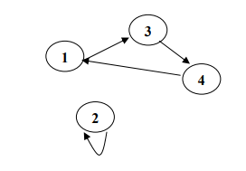

Grafi
Un Grafo è una relazione che lega un numero finito di Vertici V e un numero finito di Archi E, i quali sono i segmenti che collegano i vertici. La notazione utilizzata per esprimere l'insieme dei vertici è G(V) mentre quella per i nodi G(E). Ecco un esempio:
Per introdurre questo sistema nel mondo dell'Instradamento è necessario prima suddividere alcune tipologie di grafo, partendo da quelli riguardanti il concetto di Direzionalità.
Grafo non Orientato: Non esiste una direzionalità, le informazioni possono viaggiare da un vertice all'altro liberatamente (Come nell'esempio sovrastante).
Grafo Orientato: I messaggi sono costretti a rispettare una determinata direzionalità durante il loro traffico (Un vertice avente nodo rivolto a sé stesso è detto Cappio).
Esiste poi il Grafo Pesato, qui ogni nodo percorribile è contrassegnato da un Peso, ovvero un valore numerico che sta ad indicare quanto esso sia conveniente o meno. Ne risulta ovvio come l'obiettivo finale sia quello di portare il messaggio a destinazione al costo minore e tramite il tragitto più veloce.
Per sviluppare un programma facendo uso di grafo, i dati di quest'ultimo possono essere inseriti all'interno di due strutture dati differenti:
Matrice di Adiacenze: Nodi ed Archi sono inseriti in una Matrice, in cui le colonne indicano i nodi di destinazione e le righe quelli di origine.
Lista di Adiacenze: I dati vengono inseriti all'interno di un Array. Ad ogni nodo vengono assegnati i suoi nodi adiacenti.
Alberi
Gli Alberi sono Grafi Orientati, all'interno dei quali esiste una direzionalità solamente Discendente, questo porta ad una Struttura Gerarchica. In questa struttura dati, il primo vertice è detto Radice o Nodo Padre, mentre tutti gli altri Nodi Figli.
I Grafi sono per le tecniche di instradamento, il miglior metodo di rappresentazione, tramite di essi è possibile disegnare una Rete e svolgere numerose analisi, per decretare il miglior tragitto possibile per un pacchetto, in termini di costo, tempo ed efficacia.